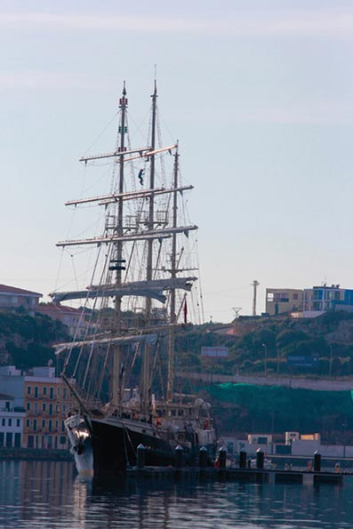
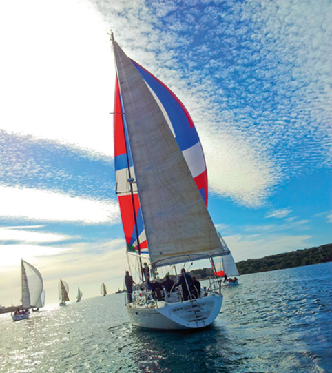

МЕНОРКА, МОРЕХОДНЫЙ РАЙ
Менорка живет лицом к лицу с морем. Остров – это не только 702 кв. км суши, но и все море, что его окружает. Найдите возможность увидеть остров со стороны моря. Местные компании предложат вам множество вариантов, как это осуществить.
Представляете, как вы входите в маленькую бухту на борту парусника? А может, на традиционном катере (llaüt)? Хотелось бы вам смотреть на закат, бросив якорь далеко в Средиземном море? На Менорке очень просто пережить эти удивительные мгновения.
Остров также является местом проведения важных морских соревнований. Дети на Менорке с малых лет учатся ориентироваться в море, следовать за волнами и по-дружески бороться с ними. Кубок Панерай (Trofeo Panerai) среди классических яхт, регата Сан Джоан (Sant Joan) и другие состязания, в которых остров – отправная или финишная точка, становятся уникальными возможностями наблюдать за морем, украшенным белыми парусами.
Менорка неотделима от моря. Насладитесь им и вы.